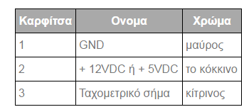

Υποστηρίζει το "Serial Advanced Technology Attachment" ή "Serial ATA." Είναι μια διεπαφή που χρησιμοποιείται για τη σύνδεση σκληρών δίσκων ATA στη μητρική πλακέτα ενός υπολογιστή.
Οι ταχύτητες μεταφοράς SATA ξεκινούν από 150MBps, κάτι που είναι σημαντικά ταχύτερο από ό, τι ακόμα και οι ταχύτεροι δίσκοι ATA / 100 των 100MBps. Για αυτόν και για άλλους λόγους,
το Serial ATA ενδέχεται να αντικαταστήσει το προηγούμενο πρότυπο, το Parallel ATA (PATA), το οποίο ήταν περίπου από τη δεκαετία του 1980.
Εκτός από ταχύτερους ρυθμούς μεταφοράς, η διασύνδεση SATA έχει πολλά πλεονεκτήματα σε σχέση με τη διασύνδεση PATA. Για ένα, οι μονάδες SATA έχουν το δικό τους ανεξάρτητο λεωφορείο,
οπότε δεν υπάρχει ανταγωνισμός για εύρος ζώνης, όπως συμβαίνει με το Parallel ATA. Χρησιμοποιούν επίσης μικρότερα, λεπτότερα καλώδια, τα οποία επιτρέπουν την καλύτερη ροή αέρα μέσα στον υπολογιστή.
Τα καλώδια SATA μπορούν να είναι μέχρι ένα μέτρο, ενώ τα καλώδια PATA φτάνουν τα μέγιστα στα 40cm. Αυτό δίνει στους κατασκευαστές περισσότερη ελευθερία κατά το σχεδιασμό της εσωτερικής διάταξης των υπολογιστών τους.
Τέλος, το Serial ATA χρησιμοποιεί μόνο 7 αγωγούς, ενώ το Parallel ATA χρησιμοποιεί 40. Αυτό σημαίνει ότι είναι λιγότερο πιθανό να υπάρξουν ηλεκτρομαγνητικές παρεμβολές σε συσκευές SATA.
Συνοπτικά, το Serial ATA είναι μια καλύτερη, πιο αποτελεσματική διεπαφή από το πρότυπο PATA με ημερομηνία. Αν ψάχνετε να αγοράσετε έναν υπολογιστή που θα υποστηρίζει γρήγορους σκληρούς δίσκους για τα επόμενα χρόνια,
βεβαιωθείτε ότι έρχεται με ένα interface SATA.
Ποιο υλικό χρησιμοποιεί το καλώδιο SATA;
Το καλώδιο SATA χρησιμοποιείται συχνότερα με σκληρούς δίσκους, αλλά χρησιμοποιείται επίσης με μονάδες δίσκου, όπως μονάδες δίσκου .
Συμβουλή: Οι παλαιότεροι υπολογιστές χρησιμοποίησαν ένα καλώδιο EIDE ή SCSI και όχι ένα καλώδιο SATA.
Πόσα pins έχει η SATA;
Υπάρχουν δύο τύποι καλωδίων SATA. Το καλώδιο δεδομένων SATA (SATA data) που μεταδίδει τα δεδομένα μεταξύ της μονάδας δίσκου και της μητρικής πλακέτας έχει επτά ακίδες. Το καλώδιο τροφοδοσίας SATA (SATA power)που συνδέεται με το τροφοδοτικό έχει
δεκαπέντε ακίδες.
Αναθεώρηση SATA 1.0 (1.5 Gbit / s, 150 MB / s, Serial ATA-150)
Η αναθεώρηση 1.0α [2] κυκλοφόρησε στις 7 Ιανουαρίου 2003. Οι διασυνδέσεις SATA πρώτης γενιάς, γνωστές τώρα ως SATA 1.5 Gbit / s, επικοινωνούν με ταχύτητα 1.5 Gbit / s, [c] και δεν υποστηρίζουν φυσική εντολή στην ουρά ( NCQ). Λαμβάνοντας υπόψη
τα εναέρια έξοδα κωδικοποίησης 8b / 10b , έχουν έναν πραγματικό κωδικοποιημένο ρυθμό μεταφοράς 1,2 Gbit / s (150 MB / s). Η θεωρητική απόδοση ανάκτησης του SATA 1,5 Gbit / s είναι παρόμοια με αυτή του PATA / 133, αλλά οι νεώτερες συσκευές SATA
προσφέρουν βελτιώσεις όπως το NCQ, οι οποίες βελτιώνουν την απόδοση σε ένα περιβάλλον πολλαπλών εργασιών.
Κατά την αρχική περίοδο μετά την ολοκλήρωση του SATA 1,5 Gbit / s, οι κατασκευαστές προσαρμογέων και μονάδων δίσκου χρησιμοποίησαν ένα "τσιπ γέφυρας" για τη μετατροπή υφιστάμενων σχεδίων PATA για χρήση με τη διασύνδεση SATA. Οι γεφυρωμένοι δίσκοι
έχουν υποδοχή SATA, μπορεί να περιλαμβάνουν ένα ή και τα δύο είδη υποδοχών τροφοδοσίας και, γενικά, να εκτελούν ταυτόσημα με τα αντίστοιχα ισοδύναμα SATA. [16] Ωστόσο, οι περισσότεροι γεφυρωμένοι δίσκοι δεν έχουν υποστήριξη για ορισμένες λειτουργίες
που σχετίζονται με το SATA, όπως το NCQ. Τα εγγενή προϊόντα SATA ανέλαβαν γρήγορα τα γεφυρωμένα προϊόντα με την εισαγωγή της δεύτερης γενιάς μονάδων δίσκου SATA.
Από τον Απρίλιο του 2010 , οι ταχύτεροι δίσκοι SATA σκληρών δίσκων των 10.000 σ.α.λ. θα μπορούσαν να μεταφέρουν δεδομένα με μέγιστες (όχι μέσες) ταχύτητες μέχρι 157 MB / s, [17] οι οποίες ξεπερνούν τις δυνατότητες της παλαιότερης προδιαγραφής PATA / 133 Υπερβαίνει επίσης τις δυνατότητες του SATA 1,5 Gbit / s.
Αναθεώρηση SATA 2.0 (3 Gbit / s, 300 MB / s, Serial ATA-300)
Η έκδοση SATA 2.0 κυκλοφόρησε τον Απρίλιο του 2004, παρουσιάζοντας τη Native Command Queuing (NCQ). Είναι συμβατό με SATA 1,5 Gbit / s.
Οι διασυνδέσεις SATA δεύτερης γενιάς εκτελούνται με ρυθμό μετάδοσης 3.0 Gbit / s, ο οποίος, όταν αντιστοιχεί στο σχήμα κωδικοποίησης 8b / 10b , ισούται με το μέγιστο μη κωδικοποιημένο ρυθμό μεταφοράς 2,4 Gbit / s (300 MB / s). Η θεωρητική απόδοση ανάκαμψης της αναθεώρησης SATA 2.0, η οποία είναι επίσης γνωστή ως SATA 3 Gbit / s, διπλασιάζει την απόδοση της αναθεώρησης SATA 1.0.
Όλα τα καλώδια δεδομένων SATA που πληρούν τις προδιαγραφές SATA βαθμολογούνται για 3,0 Gbit / s και χειρίζονται σύγχρονες μηχανικές κινήσεις χωρίς απώλεια της συνεχούς και της έκρηξης μεταφοράς δεδομένων. Ωστόσο, οι μονάδες υψηλής απόδοσης που βασίζονται στο φλας μπορεί να υπερβούν την ταχύτητα μεταφοράς SATA 3 Gbit / s. Αυτό αντιμετωπίζεται με το πρότυπο διαλειτουργικότητας SATA 6 Gbit / s.
SATA έκδοση 3.0 (6 Gbit / s, 600 MB / s, Serial ATA-600)
Ο διεθνής οργανισμός Serial-ATA (SATA-IO) παρουσίασε το σχέδιο προδιαγραφής του φυσικού στρώματος SATA 6 Gbit / s τον Ιούλιο του 2008 και επικύρωσε τις προδιαγραφές φυσικής στρώσης στις 18 Αυγούστου 2008.
27 Μαΐου 2009.
Οι διασυνδέσεις SATA τρίτης γενιάς λειτουργούν με ρυθμό μετάδοσης 6,0 Gbit / s. Λαμβανομένης υπόψη της κωδικοποίησης 8b / 10b , η μέγιστη μη κωδικοποιημένη ταχύτητα μεταφοράς είναι 4,8 Gbit / s (600 MB / s). Η θεωρητική απόδοση της έκρηξης του SATA 6.0 Gbit / s είναι διπλάσια από την έκδοση SATA 2.0.
Είναι συμβατό με SATA 3 Gbit / s.
Η προδιαγραφή SATA 3.0 περιέχει τις ακόλουθες αλλαγές:
1)6 Gbit / s για κλιμακούμενη απόδοση.
2)Η συνεχιζόμενη συμβατότητα με το SAS, συμπεριλαμβανομένου του SAS 6 Gbit / s, σύμφωνα με τον "τομέα SAS μπορεί να υποστηρίζει την προσάρτηση και τον έλεγχο των μη τροποποιημένων συσκευών SATA που είναι συνδεδεμένες απευθείας στον τομέα SAS χρησιμοποιώντας το πρωτόκολλο Serial ATA Tunnelled Protocol (STP)" από
το SATA Revision 3.0 Gold προσδιορισμός.
3)Παράμετρος συνεχούς ροής ενδοσυνεννόησης με φυσική εντολή (NCQ) για την ενεργοποίηση της ισοχρονισμένης μεταφοράς δεδομένων ποιότητας υπηρεσίας για εφαρμογές ψηφιακού περιεχομένου συνεχούς ροής
4)Μια λειτουργία διαχείρισης NCQ που βοηθά στη βελτιστοποίηση της απόδοσης, επιτρέποντας την επεξεργασία και διαχείριση κεντρικών υπολογιστών των εξαιρετικών εντολών NCQ
5)Βελτιωμένες δυνατότητες διαχείρισης ισχύος
6)Μικρή μικρή υποδοχή δύναμης εισαγωγής (LIF) για πιο συμπαγείς συσκευές αποθήκευσης 1,8 ιντσών
7)Ένα προφίλ κίνησης οπτικού δίσκου 7 mm για τη λεπτή υποδοχή SATA (εκτός από τα υπάρχοντα προφίλ 12,7 mm και 9,5 mm)
8)Ευθυγράμμιση με το πρότυπο INCITS ATA8-ACS
Σε γενικές γραμμές, οι βελτιώσεις στοχεύουν στη βελτίωση της ποιότητας των υπηρεσιών για streaming βίντεο και διακοπές υψηλής προτεραιότητας. Επιπλέον, το πρότυπο συνεχίζει να υποστηρίζει αποστάσεις έως και ενός μέτρου. Οι νεώτερες ταχύτητες ενδέχεται να απαιτούν υψηλότερη κατανάλωση ρεύματος για τη στήριξη των τσιπ,
αν και βελτιωμένες τεχνολογίες επεξεργασίας και τεχνικές διαχείρισης ενέργειας μπορούν να μετριάσουν αυτό. Η μεταγενέστερη προδιαγραφή μπορεί να χρησιμοποιήσει υπάρχοντα καλώδια και συνδέσεις SATA, αν και αναφέρθηκε το 2008 ότι ορισμένοι ΚΑΕ αναμενόταν να αναβαθμίσουν τους υποδοχείς υποδοχής για τις υψηλότερες ταχύτητες.
Τα καλώδια 3 Pin Fan Connector και 4 Pin Fan Connector
Το 3 Pin Fan Connector χρησιμοποιείται στην μητρική πλακέτα.
Ο θυλυκός πόλος(3 PIN IDC FEMALE) συνδέεται στον ανεμιστήρα και ο θετικός( 3 PIN IDC MALE) στην μητρική πλακέτα .

Επίσης, υπάρχει και το καλώδιο 4 Pin Fan Connector. Το πρότυπο για τους ανεμιστήρες σύνδεσης με 4 καλώδια αναπτύχθηκε από την Intel. Βασικός σκοπός της δημιουργίας νέου προτύπου είναι η δυνατότητα μέτρησης περιστροφής με χαμηλές ταχύτητες ανεμιστήρα και έλεγχο ακριβείας της περιστροφής σε όλο το εύρος στροφών.
Περιγραφή σήματος:
Το σήμα GND είναι γειωμένο και το 12V είναι τροφοδοσία τάσης για τον ανεμιστήρα.
Η ένδειξη σήματος (ταχύμετρο) παρέχει δύο παλμούς ανά περιστροφή ανεμιστήρα. Η έξοδος ανοίγει ο συλλέκτης και ο κεντρικός πίνακας πρέπει να έχει αντιστάθμιση έλξης στα 12V.
Ο έλεγχος σημάτων (PWM) εισάγεται για παλμούς PWM. Η βασική συχνότητα είναι 25kHz και είναι αποδεκτή από 21kHz έως 28kHz. Η είσοδος έχει επίπεδο TTL και περιλαμβάνει αντίσταση pull-up στα 5V ή στα 3.3V σε νέες κατασκευές. Το σήμα δεν είναι ανεστραμμένο και το 100% PWM σημαίνει μέγιστες στροφές ανεμιστήρα. Η μητρική πλακέτα
έχει έξοδο τύπου ανοιχτού συλλέκτη. Αυτή η εγγύηση κατασκευής, που με το αποσυνδεδεμένο σήμα PWM θα λειτουργεί ανεμιστήρα με μέγιστες στροφές.
Το καλώδιο ATX 24 pin 12V Power Connector Pinout (ATX v2.2)
Ο υποδοχέας τροφοδοσίας 24 ακροδεκτών ATX είναι η βασική υποδοχή σύνδεσης μητρικής πλακέτας σε υπολογιστές σήμερα.
O ιδιος ο connector είναι ένας σύνδεσμος Molex 39-01-2240, που ονομάζεται συχνά Molex Mini-fit Jr.
Παρακάτω είναι ο πλήρης πίνακας pinout για τον τυπικό ακροδέκτη τροφοδοσίας ρεύματος ATX 24 pin 12V από την έκδοση 2.2 της προδιαγραφής
Σημείωση: Αν χρησιμοποιείτε αυτόν τον πίνακα εντοπισμού για να δοκιμάσετε τάσεις τροφοδοσίας, λάβετε υπόψη ότι οι τάσεις πρέπει να είναι εντός των καθορισμένων ανοχών ATX .
Τα pinouts για τον προσαρμογέα τροφοδοσίας SATA 15 καρφιτσών , 4 ακροδέκτες περιφερειακής τροφοδοσίας ισχύος , 4 ακροδέκτες τροφοδοσίας πτερυγωτού δίσκου και για άλλους συνδετήρες τροφοδοσίας ATX μπορούν να προβληθούν στη λίστα πινάκων τροφοδοσίας ATX .
Περισσότερες πληροφορίες σχετικά με τον ακροδέκτη PSU ATX 24 Pin 12V
Ο ακροδέκτης τροφοδοσίας ρεύματος ATX 24 pin 12V μπορεί να συνδεθεί μόνο ενώ δείχνει μια συγκεκριμένη κατεύθυνση στη μητρική πλακέτα. Αν κοιτάξετε προσεκτικά την εικόνα στην κορυφή αυτής της σελίδας, μπορείτε να δείτε ότι οι καρφίτσες έχουν ένα μοναδικό σχήμα, ένα σχήμα
το οποίο η μητρική πλακέτα ταιριάζει σε μία μόνο κατεύθυνση.
Το αρχικό πρότυπο ATX υποστήριξε έναν σύνδεσμο 20 ακίδων με πολύ παρόμοιο καλώδιο όπως ο συνδετήρας 24 ακίδων, αλλά με τις ακίδες 11, 12, 23 και 24 παραλείπεται. Αυτό σημαίνει ότι η νέα τροφοδοσία 24 ακίδων είναι χρήσιμη για μητρικές κάρτες που απαιτούν περισσότερη ισχύ και επομένως εξαλείφει
την ανάγκη για τροφοδοτικά ATX 12V να παρέχουν ένα βοηθητικό καλώδιο τροφοδοσίας (αν και μερικοί ακόμα μπορούν).
Συμβατότητα 24 pin & 20 pin
Οι πρόσθετες τέσσερις καρφίτσες είναι συνήθως αποσπώμενες (όπως πιθανότατα βλέπετε στο κάτω μέρος της εικόνας παραπάνω), επιτρέποντάς της να χρησιμοποιηθεί σε μια 20 pin μητρική πλακέτα σύνδεση. Το επιπλέον μπλοκ ακίδων απλά κρέμεται πάνω από τον συνδετήρα της μητρικής πλακέτας - δεν συνδέονται
σε άλλη υποδοχή. Ορισμένες μητρικές κάρτες επιτρέπουν το αντίστροφο: να χρησιμοποιήσετε το παλαιότερο καλώδιο τροφοδοσίας 20 ακίδων σε σύνδεση μητρικής πλακέτας 24 ακίδων.
Εάν χρειάζεστε ένα βύσμα τροφοδοσίας 24 ακίδων σε μια μητρική πλακέτα που δέχεται μόνο ένα καλώδιο 20 καρφιτσών, υπάρχουν αρκετοί διαδικτυακοί λιανοπωλητές όπου μπορείτε να αγοράσετε έναν προσαρμογέα 24 ακίδων έως 20 ακίδων, όπως αυτός ο προσαρμογέας StarTech από την Amazon . Αν και η μητρική πλακέτα
φαίνεται να δέχεται και τις 24 καρφίτσες χρησιμοποιώντας αυτόν τον τύπο προσαρμογέα, εξακολουθεί φυσικά να σημαίνει ότι οι επιπλέον τέσσερις καρφίτσες δεν χρησιμοποιούνται.
Ποια η σημασια του καλωδίου 24-pin EATX Power connector;
Το καλώδιο 24-pin EATX Power connector κάνει την ίδια ακριβώς δουλειά όπως το ATX 24 pin 12V Power Connector δηλαδή συνδέεται πάνω στην μητρική πλακέτα και στην συνέχεια με
το τροφοδοτικό με σκοπό να τροφοδοτηθεί κατάλληλα η μητρική πλακέτα μας, ωστόσο το συγκεκριμένο καλώδιο είναι αποκλειστικά για τις EATX μητρικές πλακέτες.Αν και το πραγματικό E-ATX είναι 12 × 13 in (305 × 330 mm), οι περισσότεροι κατασκευαστές μητρικών καρτών αναφέρονται επίσης σε μητρικές με μετρήσεις
12 × 10,1 in (305 × 257 mm), 12 × 10,4 in (305 × 264 mm), 12 × 10,5 Σε (305 × 267 mm) και 12 × 10,7 in (305 × 272 mm) ως E-ATX.
Τι είναι το USB 2.0;
Το USB 2.0 είναι ένα πρότυπο Universal Serial Bus (USB), το οποίο κυκλοφόρησε τον Απρίλιο του 2000. Σχεδόν όλες οι συσκευές με δυνατότητες USB και σχεδόν όλα τα καλώδια USB υποστηρίζουν τουλάχιστον USB 2.0.
Το USB 2.0 αναφέρεται συχνά ως Hi-Speed USB .
Οι συσκευές που τηρούν το πρότυπο USB 2.0 έχουν τη δυνατότητα να μεταδίδουν δεδομένα με μέγιστη ταχύτητα 480 Mbps. Αυτό είναι ταχύτερο από το παλαιότερο πρότυπο USB 1.1 και πολύ πιο αργό από το νεότερο πρότυπο USB 3.0 .
Σημείωση: Οι παλαιότερες συσκευές και καλώδια USB 1.1 είναι, ως επί το πλείστον, φυσικά συμβατές με υλικό USB 2.0. Ωστόσο, ο μόνος τρόπος για να επιτευχθεί η ταχύτητα μετάδοσης USB 2.0 είναι εάν όλες οι συσκευές και καλώδια που συνδέονται μεταξύ τους υποστηρίζουν το USB 2.0. Οι συσκευές USB 2.0 και
τα καλώδια που χρησιμοποιούνται με συσκευές USB 3.0 και καλώδια, αν υποτεθεί ότι είναι φυσικά συμβατά, θα λειτουργούν με χαμηλότερη ταχύτητα USB 2.0.
Τι είδους συνδέσεις χρησιμοποιεί το USB 2.0;
Σημείωση: Το βύσμα είναι το όνομα που δίνεται στον αρσενικό σύνδεσμο σε καλώδιο USB 2.0 ή μονάδα flash , ενώ η υποδοχή είναι το όνομα που δίνεται στη θηλυκή υποδοχή σε μια συσκευή USB 2.0 ή ένα καλώδιο επέκτασης.
1)USB Type A : Αυτές οι υποδοχές ονομάζονται τεχνικά USB 2.0 Standard-A και είναι οι τέλεια ορθογώνιες υποδοχές USB που θα βρείτε στις περισσότερες μη κινητές συσκευές. Οι υποδοχές τύπου USB 2.0 τύπου A είναι φυσικά συμβατές με τις συνδέσεις USB 3.0 και USB 1.1.
2)USB Type B : Αυτές οι υποδοχές ονομάζονται τεχνικά USB 2.0 Standard-B και είναι τετράγωνες εκτός από μια μικρή εγκοπή στην κορυφή. Τα βύσματα τύπου USB 2.0 τύπου B είναι φυσικά συμβατά με δοχεία τύπου USB 3.0 και USB 1.1 τύπου Β, αλλά τα βύσματα τύπου USB 3.0 Type B δεν
είναι συμβατά προς τα πίσω με υποδοχές τύπου USB 2.0 τύπου B.
3)USB Micro-A: Αυτές οι υποδοχές, ειδικά τα βύσματα, μοιάζουν με μινιατούρες εκδόσεις των υποδοχών USB 2.0 Type A. Τα βύσματα Micro-A USB 2.0 είναι συμβατά τόσο με υποδοχές USB 2.0 Micro-AB όσο και με υποδοχές USB 3.0 Micro-AB. Ωστόσο, τα νεότερα βύσματα USB 3.0 Micro-A
δεν θα χωρέσουν σε υποδοχές USB 2.0 Micro-AB.
4)USB Micro-B: Αυτές οι υποδοχές είναι μικρές και ορθογώνιες, αλλά δύο γωνίες στη μία πλευρά είναι κεκλιμένες αντί για τετράγωνο. Τα φις USB 2.0 Micro-B είναι συμβατά με τέσσερα δοχεία: τόσο USB 2.0 όσο και USB 3.0 Micro-B και Micro-AB υποδοχές. Τα νεότερα πτερύγια USB 3.0
Micro-B δεν είναι συμβατά προς τα πίσω ούτε με υποδοχή USB 2.0 Micro.
5)USB Mini-A: Αυτές οι υποδοχές είναι μικρές και συνήθως ορθογώνιες με μία πολύ στρογγυλεμένη πλευρά. Τα βύσματα USB 2.0 Mini-A είναι συμβατά μόνο με υποδοχές USB 2.0 Mini-AB.
6)USB Mini-B: Αυτές οι υποδοχές είναι μικρές και κατά κανόνα ορθογώνιες με εμφανή σημεία στις μικρές πλευρές. Τα βύσματα USB 2.0 Mini-B είναι συμβατά με υποδοχές USB 2.0 Mini-B και USB 2.0 Mini-AB.
Σημείωση: Μόνο το USB 2.0 υποστηρίζει υποδοχές USB Mini-A, USB Mini-B και USB Mini-AB.
Τι είναι το USB 3.0;
Το USB 3 (τώρα 3.1) είναι η τρέχουσα έκδοση του πανταχού παρόντος προτύπου Universal Serial Bus, το οποίο τα τελευταία είκοσι χρόνια έχει κυριαρχήσει όχι μόνο στην περιφερειακή αγορά υπολογιστών αλλά τώρα χρησιμοποιείται ως τυπική υποδοχή τροφοδοσίας για αμέτρητα τηλέφωνα, gadgets ,
Και τα παιχνίδια. Με την κυκλοφορία του USB 3.1 και της συνοδευτικής νέας φυσικής μορφής, Type-C , το εύρος του spec έχει επεκταθεί και πάλι για να συμπεριλάβει μεγαλύτερη ταχύτητα, δύναμη και ευελιξία.
Τι είδους συνδέσεις χρησιμοποιεί το USB 3;
USB Type-A - Το USB που γνωρίζετε και αγαπάτε, μόνο ταχύτερα:
Η κλασική και πιο αναγνωρίσιμη μορφή USB, ελάχιστα έχει αλλάξει εξωτερικά σε αυτόν τον σύνδεσμο από την εισαγωγή του το 1995. Εντούτοις, στο εσωτερικό του, το USB 3.0 προσθέτει πέντε πρόσθετες καρφίτσες και την απαίτηση ότι η "γλώσσα" του να είναι χρωματισμένη σε μια υπέροχη σκιά του Panton 300C μπλε.
USB Type-B - Λίγο περισσότερο στην κορυφή:
Όπως μια καμπάνα καμπάνα, η υποδοχή USB 3 Type-B χρησιμοποιεί το εναποθηκευμένο χώρο αποθήκευσης για να συσκευάσει πέντε καινούργιες καρφίτσες στο βύσμα, ένα αντίστοιχο των πρόσθετων ακίδων στο βύσμα A. Σε αντίθεση με τον Τύπο Α, όμως, αυτός ο σύνδεσμος δεν είναι συμβατός προς τα πίσω με τα δοχεία τύπου USB 2.0 Type-B.
USB 3.0 Micro-B - Το πλευρικό καρότσι:
Πριν ανακοινωθεί ο τύπος C, η λύση USB 3 σε μικρότερο σύνδεσμο ήταν να πάρει την υπάρχουσα υποδοχή Micro-B και να κολλήσει μια άλλη κονσόλα δίπλα της μαζί. Αυτό εμφανίστηκε κυρίως σε εξωτερικούς σκληρούς δίσκους, αλλά έκανε το δρόμο της σε δύο κινητές συσκευές επίσης. Η δημοφιλής θεωρία είναι ότι αυτή η μορφή θα αντικατασταθεί πολύ γρήγορα από τον Τύπο Γ.
USB Type-C - Ένα βύσμα για να τους κανόνες Όλα:
Το USB Type-C (ή USB-C) είναι ένα φορμά σύνδεσης USB που εισάγεται παράλληλα με το USB 3.1 spec στα τέλη του 2014. Σκοπός του είναι να αντικαταστήσει τελικά όλες τις τρέχουσες υποδοχές USB, συμπεριλαμβανομένων των παραδοσιακών USB-A, USB-B και Micro -ΣΙ. Είναι προσανατολισμένος και χωρίς κατεύθυνση και επιτρέπει τόσο το SuperSpeedPlus στα 10Gbps, όσο και τη μεταφορά
ισχύος μέχρι 100W (20v 4A). Για περισσότερες πληροφορίες, ανατρέξτε στις πλήρεις Συχνές Ερωτήσεις σχετικά με τον τύπο C!
Τι είναι το USB USB 3.1 gen 1 & gen 2;
Ο καθολικός σειριακός δίαυλος ή το USB είναι εδώ και πολύ καιρό και χρησιμοποιείται για τη σύνδεση μιας ευρείας ποικιλίας συσκευών από την αποθήκευση στο υλικό εισόδου. Ο σκοπός του USB είναι να διευκολύνει τη σύνδεση των εξωτερικών συσκευών, δημιουργώντας μια τυποποιημένη υποδοχή για να αντικαταστήσει το πλήθος των υποδοχών στο πίσω μέρος του υπολογιστή.
Το Φόρουμ υλοποίησης USB ιδρύθηκε από μια ομάδα επτά μεγάλων εταιρειών πληροφορικής που υποστηρίζουν και προωθούν την ανάπτυξη και την υψηλή ποιότητα των συσκευών USB. Η ονομασία τους και τα προσόντα των αναθεωρήσεων USB έχουν υιοθετηθεί από όλες σχεδόν τις μεγάλες εταιρείες πληροφορικής σε όλο τον κόσμο.
Από τη γενίκευση της εισαγωγής του USB 1.1 το 1998, υπήρξαν πολλαπλές αναθεωρήσεις οι οποίες επέτρεψαν υψηλότερες ταχύτητες μεταφοράς και μεγαλύτερη ισχύ για χρήση περιφερειακών. Η πιο πρόσφατη αναθεώρηση είναι το USB 3.1, το οποίο έχει χωριστεί σε Gen 1 και Gen 2, αλλά τι ακριβώς είναι η διαφορά μεταξύ των δύο;
Το USB 3.0 κυκλοφόρησε το 2008, παρέσχε μια άνευ προηγουμένου αύξηση στις ταχύτητες μεταφοράς (έως και 5Gbps) και πρόσθεσε περισσότερη ισχύ για να συνδέσει περισσότερες περιφερειακές συσκευές. Το 2013 έγινε ένα άλλο σημαντικό άλμα με την εισαγωγή του USB 3.1, διπλασιάζοντας τις ταχύτητες έως και 10Gbps!
Όταν το USB 3.0 έγινε USB 3.1 Gen 1:
Το USB 3.0 καλείται πλέον USB 3.1 Gen 1 (Ταχύτητα μέχρι 5Gbps)
Το USB 3.1 καλείται πλέον USB 3.1 Gen 2 (Ταχύτητα μέχρι 10Gbps)
Ως συνήθως, οι εταιρείες τεχνολογίας σε όλο τον κόσμο έχουν αρχίσει να υιοθετούν αυτή τη νέα ταξινόμηση. ( Apple και Kingston για να αναφέρουμε μερικά) Στις τελευταίες γενιές Z170 GAMING μητρικές μας θα βρείτε τόσο USB 3.1 Gen 1 και USB 3.1 Gen 2 συνδέσεις με τα νέα ονόματα τους από τον οργανισμό USB-IF.
Type-A and Type-C connectors:
Δίπλα στη νέα ονομασία των αναθεωρήσεων USB, μπορεί επίσης να έχετε παρατηρήσει ότι ο νέος τύπος σύνδεσης C αναφέρεται όλο και περισσότερο. Η υποδοχή τύπου A είναι η υποδοχή USB που βρίσκεται στις περισσότερες συσκευές αυτές τις μέρες. Ωστόσο, καθώς όλοι όσοι έχουν ποτέ συνδέσει μια συσκευή USB γνωρίζουν, ο σύνδεσμος πρέπει να τοποθετηθεί με έναν συγκεκριμένο τρόπο, ώστε να μπορείτε να τον συνδέσετε.
Δεν θα αντιμετωπίσετε αυτό το πρόβλημα με τη σύνδεση τύπου-C, η οποία είναι συμμετρική. Αυτό σημαίνει ότι θα χωράει ανεξάρτητα από τον τρόπο που δείχνει προς τα πάνω!
Δεν είναι ίσες όλες οι υποδοχές τύπου USB τύπου C:
Μία λέξη προσοχής όταν βλέπετε τη νέα λαμπερή υποδοχή τύπου C στη νέα σας μητρική πλακέτα ή φορητό υπολογιστή: Το Type-C δεν συνδέεται αυτόματα με τις ταχύτητες USB 3.1 Gen 2 (μέχρι 10Gbps). Ορισμένα προϊόντα με υποδοχή τύπου C εξακολουθούν να υποστηρίζουν μόνο ταχύτητες USB 3.1 Gen 1 (μέχρι 5Gbps).
Έτσι όταν αγοράζετε ένα νέο προϊόν που περιλαμβάνει μια υποδοχή Τύπου C, ελέγχετε πάντα εάν έχει προδιαγραφές USB 3.1 Gen 1 ή Gen 2!
Ποια είναι τα πλεονεκτήματα των USB 3.0 και 3.1;
Ταχύτητα:
Το USB 3.0 αύξησε την ταχύτητα USB από 480Mbps σε "SuperSpeed" 5Gbps, ενώ το USB 3.1 διπλασίασε αυτό με μέγιστο ρυθμό 10Gbps που ονομάζεται "SuperSpeedPlus". Αυτό το καθιστά ανταγωνιστικό τόσο με το FireWire όσο και με το Thunderbolt, και επιτρέπει τον καλύτερο χειρισμό μεγάλων αρχείων και ακόμη και ζωντανού βίντεο.
Ισχύς:
Με τη συνεχώς αυξανόμενη δημοτικότητα του USB για τη φόρτιση τηλέφωνα, ταμπλέτες και άλλα μικρά ηλεκτρονικά, το όριο USB 2.0 του 5v 500mA γινόταν γρήγορα ανεπαρκές. Το USB 3.0 βελτιώθηκε σε αυτό με αύξηση στα 5v 900 mA. Το USB 3.1 παίρνει αυτό ακόμα περισσότερο όταν συνδυάζεται με ένα καλώδιο Type-C, ικανό να παράγει 20v 5A (100W!). Αρκετά για να εκτελέσετε μια οθόνη ή να φορτώσετε ένα φορητό υπολογιστή.
Ευστροφία:
Το μεγαλύτερο μέρος της ευελιξίας του USB 3.1 έγκειται στη νέα φυσική μορφή του - Type-C. Σε αντίθεση με τις προηγούμενες μορφές USB, ο συνδετήρας του Type-C είναι και χωρίς προσανατολισμό (ο σύνδεσμος δεν έχει πλευρά "προς τα πάνω") και το καλώδιο είναι αναστρέψιμο (το καθένα μπορεί να συνδεθεί σε οποιαδήποτε συσκευή). Περιλαμβάνει επίσης περισσότερη εσωτερική καλωδίωση από ό, τι χρειάζεται το USB 3.1, επιτρέποντάς του να λειτουργεί με άλλα πρότυπα όπως το DisplayPort.
Ποιες συσκευές μπορώ να χρησιμοποιήσω με το USB 3;
Παρά την κλίμακα και τις επιθετικές βελτιώσεις του προτύπου SuperSpeed USB, σχεδιάστηκε θεμελιωδώς για να είναι συμβατή με την υπάρχουσα τεχνολογία USB. Ένας κρίσιμος πυλώνας της προδιαγραφής USB 3 εξετάζει πώς η διεπαφή USB 3 πρέπει να παραμείνει συμβατή με τα εκατομμύρια των υπάρχοντων υπολογιστών και συσκευών USB στην αγορά. Ως επί το πλείστον, όλες οι συσκευές USB 2.0 θα λειτουργούν σε υλικό USB 3.0 και (σχεδόν) όλες οι συσκευές USB 3 θα λειτουργούν σε υλικό USB 2.0.
Ως μέρος της απαίτησης, όλες οι θύρες USB 3.0 περιλαμβάνουν τις απαραίτητες ακίδες και λογική για την επεξεργασία σημάτων USB 2.0. Οι εξαιρέσεις σε αυτόν τον κανόνα είναι μερικές συνδέσεις USB 3 που είναι φυσικά ασύμβατες με τους αντίστοιχους 2.0. Αυτά περιλαμβάνουν το USB 3 Type-B, το USB Type-C και το USB 3 Micro-B.
Αν σκέφτεστε να χρησιμοποιήσετε τα καλώδια USB 2.0 ή USB 3.0 για την εγκατάστασή σας, συνιστούμε τη χρήση του 3.0 για σκοπούς μελλοντικής συμβατότητας. Εάν εγκαταστήσετε USB μέσω αγωγού ή ως συστατικό ενός μεγαλύτερου συγκροτήματος, δεν υπάρχει κανένας λόγος να μην ενσωματωθούν καλώδια USB 3.0.
Τι είναι το Connector B Powered;
Μια αδυναμία των παλαιότερων προδιαγραφών USB ήταν η μονόπλευρη επιλογή της θύρας. Τα περιφερειακά συνδεδεμένα απευθείας σε ένα μηχάνημα υποδοχής επιτρέπεται να αντλούν ενέργεια από τη θύρα υποδοχής και να λειτουργούν χωρίς εξωτερική τροφοδοσία AC ή DC. Δεν υπήρξε αμοιβαία για το τέλος της συσκευής, ωστόσο το υλικό USB από την πλευρά της συσκευής (όπως οι μονάδες USB-Over-Ethernet και οι προσαρμογείς USB-WiFi) χρειάστηκε το δικό τους τούβλο εξουσίας. Ιδιαίτερα για τις
εγκαταστάσεις τοίχου και τα ολοκληρωμένα προϊόντα, αυτό ήταν ένα εμπόδιο που παρουσίαζε οποιοδήποτε τεχνικό πρόβλημα.
Το USB 3.0 επιδιώκει να αποκαταστήσει αυτήν την κατάσταση με μια παρακέντηση του βύσματος USB B που ονομάζεται βύσμα Powered B. Όταν συνδυάζονται με μια συσκευή συμβατή με το B, τα αξεσουάρ USB 3.0 μπορούν να τραβήξουν τη δύναμή τους από τη συσκευή ακριβώς όπως από έναν κεντρικό υπολογιστή. Το βύσμα Powered B male είναι διαθέσιμο μόνο σε σκληρούς δίσκους σε συσκευές που το υποστηρίζουν ειδικά. Δεν υπάρχουν καλώδια B Powered.
Η εφαρμογή Powered B σχετίζεται επίσης με τον ξεχωριστό παράγοντα μορφής του συνδέσμου SuperSpeed USB B. Οι τυπικές συσκευές USB B μπορούν να συνδεθούν με τους κεντρικούς υπολογιστές USB 2.0 χρησιμοποιώντας καλώδιο USB 2.0 A-to-B, το οποίο είναι συμβατό με τη θύρα USB 3.0 B της συσκευής. Από την άλλη πλευρά, οι τροφοδοτούμενες συσκευές USB Β θα έχουν πάντα καλώδιο (μη αφαιρούμενο), επομένως δεν υπάρχει κίνδυνος να επιχειρήσετε να χρησιμοποιήσετε μια Powered USB B συσκευή
μέσω καλωδίου USB 2.0, ούτε υπάρχει κίνδυνος να συνδέσετε ένα Ενσωματωμένη συσκευή USB B σε θύρα USB 2.0.
5 Τι είναι το καλώδιο τροφοδοσίας PCI Express 6 pin?
Αυτό το καλώδιο χρησιμοποιείται για την παροχή πρόσθετης ισχύος 12 volt στις κάρτες επέκτασης PCI Express. Οι υποδοχές μητρικών καρτών PCI Express μπορούν να παρέχουν μέγιστη ισχύ 75 watt. Πολλές κάρτες γραφικών τραβούν σημαντικά περισσότερο από 75 watt, έτσι δημιουργήθηκε το καλώδιο τροφοδοσίας PCI Express 6 pin. Αυτές οι κάρτες υψηλής ισχύος αντλούν το μεγαλύτερο μέρος της ισχύος τους από τη ράγα 12 volt έτσι ώστε αυτό το καλώδιο να παρέχει μόνο 12 βολτ.
Αυτά καλούνται μερικές φορές "καλώδια PCI Express". Συχνά ονομάζονται "καλώδια PEG" όπου το "PEG" σημαίνει PCI Express Graphics. Εάν το τροφοδοτικό δεν διαθέτει καλώδιο PCI Express 6 pin, τότε μπορείτε να χρησιμοποιήσετε τον προσαρμογέα που φαίνεται παραπάνω στα δεξιά για να μετατρέψετε δύο περιφερειακά καλώδια 4 pin σε ένα καλώδιο PCI Express. Αν χρησιμοποιείτε προσαρμογέα, βεβαιωθείτε ότι έχετε συνδέσει τους περιφερειακούς ακροδέκτες 4 pin σε ξεχωριστά καλώδια που προέρχονται από την τροφοδοσία.
Εάν τα συνδέσετε και τα δύο στο ίδιο καλώδιο τροφοδοσίας, τότε αντλούμε όλη την ισχύ του συνδέσμου PCI Express μέσω ενός μόνο καλωδίου 18 gauge. Μπορείτε συνήθως να ξεφύγετε από αυτό, αλλά δεν υπάρχει λόγος να το κάνετε. Ο ακροδέκτης PCI Express 6 pin είναι πολωμένος, ώστε να μπορεί να συνδεθεί μόνο προς την σωστή κατεύθυνση. Αλλά, όπως και με τους συνδετήρες αυτού του τύπου, μπορείτε μερικές φορές να τους ωθήσετε σε λάθος είδος υποδοχής, αν προσπαθήσετε αρκετά. Εάν δεν γλιστρά εύκολα, πιθανώς να την συνδέσετε σε λάθος θέση.
Ορισμένες κάρτες γραφικών διατίθενται με τον ακροδέκτη τροφοδοσίας PCI Express με 8 pin για υποστήριξη υψηλότερης ισχύος από τους ακροδέκτες PCI Express με 6 pin. Είναι εντάξει να συνδέσετε ένα καλώδιο τροφοδοσίας PCI Express 6 pin σε μια υποδοχή PCI Express με 8 pin. Είναι σχεδιασμένο να λειτουργεί με αυτόν τον τρόπο, αλλά θα περιορίζεται στη χαμηλότερη ισχύ που παρέχεται από την 6-πολική έκδοση του καλωδίου. Το καλώδιο των 6 pin προσαρμόζεται μόνο στο ένα άκρο του συνδέσμου 8 pin, έτσι ώστε να μην μπορείτε να το τοποθετήσετε εσφαλμένα,
αλλά μπορείτε μερικές φορές να πιέσετε το καλώδιο των 6 pin κατά λάθος αν προσπαθήσετε αρκετά. Οι κάρτες βίντεο μπορούν να ανιχνεύσουν αν έχετε συνδέσει ένα καλώδιο 6 ή 8 pin σε έναν ακροδέκτη 8 pin, έτσι ώστε η κάρτα οθόνης να μπορεί να επιβάλει κάποιο είδος περιορισμού κατά την εκτέλεση μόνο με ένα καλώδιο τροφοδοσίας 6 pin. Ορισμένες κάρτες θα αρνηθούν να τρέξουν με μόνο ένα καλώδιο 6 ακίδων σε μια πρίζα 8 ακίδων. Άλλοι θα δουλέψουν με ένα καλώδιο 6 ακίδων σε κανονικές ταχύτητες, αλλά δεν θα επιτρέψουν την overclocking.
Ελέγξτε την τεκμηρίωση της κάρτας οθόνης για να λάβετε τους κανόνες. Αλλά αν δεν έχετε άλλες πληροφορίες τότε απλώς υποθέστε ότι εάν η κάρτα γραφικών σας διαθέτει έναν ακροδέκτη 8 ακίδων τότε πρέπει να συνδέσετε ένα καλώδιο 8 pin.
Η προδιαγραφή PCI Express, δυστυχώς, δεν είναι ελεύθερη, δημόσια προδιαγραφή. Έτσι οι περισσότεροι άνθρωποι δεν το έχουν δει ποτέ. Συμπεριλαμβανομένου εμού. ATX προδιαγραφή: ελεύθερα διαθέσιμη σε όλους. Οι προδιαγραφές PCI Express: δαπανηρές, οπότε κανείς δεν το έχει δει. ATX: καλό. PCI Express: κακό. Είναι κρίμα όταν ένα ευρέως χρησιμοποιούμενο πρότυπο δεν είναι ελεύθερα διαθέσιμο στο κοινό. Παρ 'όλα αυτά, οι πληροφορίες διαφεύγουν από την προδιαγραφή και το καλώδιο τροφοδοσίας PCI Express 6 pin βαθμολογείται πραγματικά σε ένα εξαιρετικά
συντηρητικό 75watt. Δεν έχω ιδέα γιατί η ισχύς είναι τόσο χαμηλή επειδή οι προδιαγραφές της Molex επιτρέπουν σαφώς μεγαλύτερη ισχύ. Μέρος του λόγου μπορεί να είναι ότι ο ακροδέκτης 2 (που αναφέρεται παραπάνω ως γραμμή 12 volt) μπορεί να αναφέρεται ως μη συνδεδεμένος στις προδιαγραφές. Δεν έχω δει ποτέ ένα καλώδιο τροφοδοσίας PCI Express 6 pin με τον ακροδέκτη 2 που δεν είναι συνδεδεμένος. Έχουν όλοι μια γραμμή 12 βολτ συνδεδεμένη με τον ακροδέκτη 2. Έχω δει επίσης ισχυρισμούς ότι μπορεί να υπάρχουν μη υλοποιημένες γραμμές λογικής στην προδιαγραφή.
Καλώς ήρθατε στην αβεβαιότητα που συμβαίνει όταν δεν έχετε ελεύθερα διαθέσιμες προδιαγραφές. Ακόμη και με μόνο δύο γραμμές 12 volt, η τυπική εφαρμογή των καλωδίων ισχύος PCI Express χρησιμοποιεί καλώδιο μεγάλου μεγέθους και αρκετά καλή υποδοχή για να παρέχει πολύ περισσότερα από τα τρία ενισχυτικά ανά καλώδιο που απαιτούνται για την παροχή 75 watt. Παρόλα αυτά, το καλώδιο τροφοδοσίας PCI Express 6 ακίδων παρέχει επίσημα μόνο 75 watt. Κατά πάσα πιθανότητα, ωστόσο, οι πραγματικές υλοποιήσεις αυτού του καλωδίου τροφοδοσίας μπορούν να παρέχουν πολύ περισσότερα από 75 Watt.
Τι είναι το καλώδιο τροφοδοσίας PCI Express 8 pin?
Η προδιαγραφή PCI Express 2.0 που κυκλοφόρησε τον Ιανουάριο του 2007 προσέθεσε ένα καλώδιο τροφοδοσίας PCI Express 8 pin. Είναι απλά μια έκδοση 8 ακίδων του καλωδίου τροφοδοσίας PCI Express 6 Pin . Και οι δύο χρησιμοποιούνται κυρίως για την παροχή συμπληρωματικής ισχύος σε κάρτες γραφικών. Η παλαιότερη εκδοχή 6 ακίδων παρέχει επίσημα μέγιστη ισχύ 75 watt (αν και ανεπίσημα μπορεί συνήθως να προσφέρει πολύ περισσότερα) ενώ η νέα εκδοχή 8 ακίδων παρέχει μέγιστη ισχύ 150 Watt. Είναι πολύ εύκολο να συγχέουμε την έκδοση 8 ακίδων με το καλώδιο 12 βολίδων EPS 8 pin που μοιάζει πολύ.
Οι ακροδέκτες PCI Express με 8 pin και οι ακροδέκτες των 12 βολίδων EPS με 8 pin είναι πολωμένοι με διαφορετικό τρόπο, έτσι ώστε να μην μπορείτε να συνδέσετε ένα καλώδιο στο άλλο βύσμα. Δηλαδή, δεν θα μπορείτε να συνδέσετε το λανθασμένο καλώδιο αν δεν προσπαθήσετε πολύ σκληρά. Δυστυχώς, οι βύσματα Molex Mini-fit Jr. που χρησιμοποιούνται από τα δύο είδη καλωδίων τροφοδοσίας μπορούν μερικές φορές να αναγκαστούν σε διαφορετικά πολωμένο βύσμα αν έχουν μόνο μερικές ακίδες και πιέζετε αρκετά. Εάν το καλώδιο δεν μπορεί να γλιστρήσει εύκολα, πιθανότατα προσπαθείτε να εισάγετε το λανθασμένο καλώδιο.
Η υποδοχή PCI Express 8 pin έχει μια μικρή πλαστική γέφυρα που την εμποδίζει να συνδεθεί σε ένα βύσμα μητρικής πλακέτας 12 ακίδων EPS 8 pin . Μπορείτε να δείτε τη γέφυρα στην εικόνα παραπάνω μεταξύ των δύο ακίδων που βρίσκονται στη δεξιά πλευρά της επάνω γραμμής του συνδέσμου. Αλλά δεν υπάρχει τέτοια προστασία για να αποφευχθεί η σύνδεση των 8 βρόγχων 12 βολίδων EPS σε 8 ακροδέκτες PCI Express σε μια κάρτα γραφικών. Αυτός ο συνδυασμός μπορεί να ταιριάζει, αν σκουπίσετε αρκετά. Και αν συνδέσετε το λάθος καλώδιο τότε αναμένετε πυροτεχνήματα. Μερικοί από τους λόγους και καλώδια 12 βολτ για έναν ακροδέκτη 8 pin
12 βολτ αντιστρέφονται σε σύγκριση με μια 8 pin PCI Express. Ευτυχώς, οι περισσότεροι ακροδέκτες PCI Express με 8 ακίδες φέρουν την ετικέτα "PCI-E", ώστε οι χρήστες να μην τις μπερδεύουν με καλώδια 12 βολτ EPS 8 pin . Αν οι σύνδεσμοι δεν φέρουν ετικέτα τότε μπορείτε να αναφέρετε ένα καλώδιο τροφοδοσίας PCI Express 8 ακίδων από ένα καλώδιο 12 βολίδων EPS 8 pin, ελέγχοντας το χρώμα των συρμάτων που συνδέονται στην πλευρά του συνδετήρα του συνδετήρα. Στο καλώδιο 8 pin EPS , τα κίτρινα σύρματα (τα καλώδια 12 volt) μπαίνουν στην πλευρά του συνδετήρα. Στο καλώδιο PCI Express με 8 pin, τα καλώδια στην πλευρά του κλιπ
είναι όλα μαύρα (βάρη). Αυτό είναι το ίδιο με το καλώδιο τροφοδοσίας PCI Express 6 Pin . Φυσικά, τίποτα από αυτά δεν σας βοηθά αν το καλώδιο σας χρησιμοποιεί το μοντέρνο σχεδιασμό όλων των ίδιων χρωμάτων που είναι δημοφιλές με υψηλής τάσης τροφοδοτικά. Σε αυτή την περίπτωση θα πρέπει απλώς να είστε πολύ προσεκτικοί ή να ελπίζετε ότι οι σύνδεσμοι είναι επισημασμένοι.
Τι είναι το καλώδιο τροφοδοσίας PCI Express 6 + 2 pin;
Ορισμένες κάρτες οθόνης διαθέτουν υποδοχές τροφοδοσίας PCI Express 6 Pin και άλλοι σύνδεσμοι ισχύος PCI Express 8 Pin . Πολλά τροφοδοτικά διαθέτουν ένα καλώδιο τροφοδοσίας PCI Express 6 + 2, το οποίο είναι συμβατό και με τα δύο είδη καρτών οθόνης. Το καλώδιο τροφοδοσίας PCI Express 6 + 2 αποτελείται από δύο τεμάχια: τεμάχιο 6 ακίδων και τεμάχιο 2 pin. Εάν τοποθετήσετε τα δύο τεμάχια μαζί, τότε έχετε ένα καλώδιο τροφοδοσίας PCI Express 8 ακίδων. Αν όμως χωρίσετε το βύσμα σε δύο μέρη, μπορείτε να συνδέσετε το 6 pin τμήμα στην παλαιότερη υποδοχή PCI Express με 6 pin και αφήστε το τμήμα 2 pin αποσυνδεδεμένο. Με αυτό τον τρόπο, το τροφοδοτικό σας χρειάζεται μόνο ένα καλώδιο 6 + 2 για να είναι συμβατό τόσο με ακροδέκτες PCI Express με 6 και 8 pin.
Τι είναι το καλώδιο τροφοδοσίας MOLEX 4 pin connector;
Ο σύνδεσμος τροφοδοσίας ρεύματος 4 pin Molex είναι ένας από τους τυπικούς περιφερειακούς συνδέσμους τροφοδοσίας σε υπολογιστές σήμερα. Ο ίδιος ο συνδετήρας τροφοδοσίας είναι ένας σύνδεσμος Molex 8981 που ονομάζεται AMP MATE-N-LOK.
Αυτός ο σύνδεσμος τροφοδοσίας είναι ο τυπικός σύνδεσμος για όλους τους σκληρούς δίσκους που βασίζονται σε PATA , πολλές κάρτες γραφικών υψηλής ποιότητας και μερικούς παλαιότερους οπτικούς δίσκους και άλλες εσωτερικές συσκευές.
Παρακάτω είναι το pinout για τον τυπικό περιφερειακό σύνδεσμο τροφοδοσίας Molex 4 pin από την έκδοση 2.2 της προδιαγραφής ATX.
Σημείωση:
Αν χρησιμοποιείτε αυτόν τον πίνακα εντοπισμού για να δοκιμάσετε τάσεις τροφοδοσίας, λάβετε υπόψη ότι οι τάσεις πρέπει να είναι εντός των ορίων ανοχής ATX .